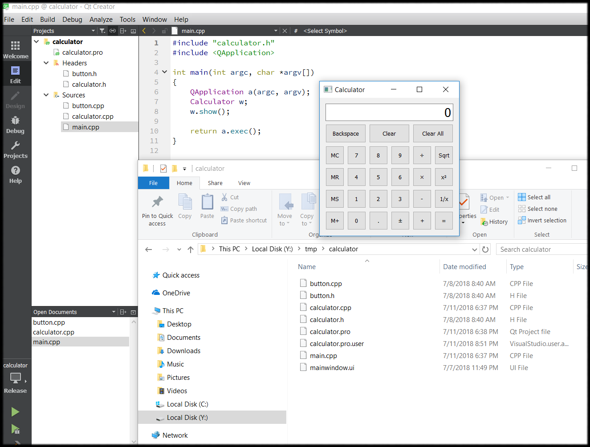

calculator.pro
#-------------------------------------------------
#
# Project created by QtCreator 2018-07-07T23:49:39
#
#-------------------------------------------------
greaterThan(QT_MAJOR_VERSION, 4): QT += widgets
TARGET = calculator
TEMPLATE = app
# The following define makes your compiler emit warnings if you use
# any feature of Qt which has been marked as deprecated (the exact warnings
# depend on your compiler). Please consult the documentation of the
# deprecated API in order to know how to port your code away from it.
DEFINES += QT_DEPRECATED_WARNINGS
# You can also make your code fail to compile if you use deprecated APIs.
# In order to do so, uncomment the following line.
# You can also select to disable deprecated APIs only up to a certain version of Qt.
#DEFINES += QT_DISABLE_DEPRECATED_BEFORE=0x060000 # disables all the APIs deprecated before Qt 6.0.0
SOURCES += \
main.cpp \
button.cpp \
calculator.cpp
HEADERS += \
button.h \
calculator.h
main.cpp
#include "calculator.h"
#include <QApplication>
int main(int argc, char *argv[])
{
QApplication a(argc, argv);
Calculator w;
w.show();
return a.exec();
}
button.h
#ifndef BUTTON_H
#define BUTTON_H
#include <QToolButton>
class Button : public QToolButton
{
Q_OBJECT
public:
explicit Button(const QString &text, QWidget *parent = 0);
QSize sizeHint() const override;
};
#endif
calculator.h
#ifndef CALCULATOR_H
#define CALCULATOR_H
#include <QWidget>
class QLineEdit;
class Button;
class Calculator : public QWidget
{
Q_OBJECT
public:
Calculator(QWidget *parent = 0);
private slots:
void digitClicked();
void unaryOperatorClicked();
void additiveOperatorClicked();
void multiplicativeOperatorClicked();
void equalClicked();
void pointClicked();
void changeSignClicked();
void backspaceClicked();
void clear();
void clearAll();
void clearMemory();
void readMemory();
void setMemory();
void addToMemory();
private:
Button *createButton(const QString &text, const char *member);
void abortOperation();
bool calculate(double rightOperand, const QString &pendingOperator);
double sumInMemory;
double sumSoFar;
double factorSoFar;
QString pendingAdditiveOperator;
QString pendingMultiplicativeOperator;
bool waitingForOperand;
QLineEdit *display;
enum { NumDigitButtons = 10 };
Button *digitButtons[NumDigitButtons];
};
#endif
button.cpp
#include <QtWidgets>
#include "button.h"
Button::Button(const QString &text, QWidget *parent)
: QToolButton(parent)
{
setSizePolicy(QSizePolicy::Expanding, QSizePolicy::Preferred);
setText(text);
}
QSize Button::sizeHint() const
{
QSize size = QToolButton::sizeHint();
size.rheight() += 20;
size.rwidth() = qMax(size.width(), size.height());
return size;
}
calculator.cpp
#include <QtWidgets>
#include <cmath>
#include "button.h"
#include "calculator.h"
Calculator::Calculator(QWidget *parent)
: QWidget(parent)
{
sumInMemory = 0.0;
sumSoFar = 0.0;
factorSoFar = 0.0;
waitingForOperand = true;
display = new QLineEdit("0");
display->setReadOnly(true);
display->setAlignment(Qt::AlignRight);
display->setMaxLength(15);
QFont font = display->font();
font.setPointSize(font.pointSize() + 8);
display->setFont(font);
for (int i = 0; i < NumDigitButtons; ++i) {
digitButtons[i] = createButton(QString::number(i), SLOT(digitClicked()));
}
Button *pointButton = createButton(tr("."), SLOT(pointClicked()));
Button *changeSignButton = createButton(tr("\302\261"), SLOT(changeSignClicked()));
Button *backspaceButton = createButton(tr("Backspace"), SLOT(backspaceClicked()));
Button *clearButton = createButton(tr("Clear"), SLOT(clear()));
Button *clearAllButton = createButton(tr("Clear All"), SLOT(clearAll()));
Button *clearMemoryButton = createButton(tr("MC"), SLOT(clearMemory()));
Button *readMemoryButton = createButton(tr("MR"), SLOT(readMemory()));
Button *setMemoryButton = createButton(tr("MS"), SLOT(setMemory()));
Button *addToMemoryButton = createButton(tr("M+"), SLOT(addToMemory()));
Button *divisionButton = createButton(tr("\303\267"), SLOT(multiplicativeOperatorClicked()));
Button *timesButton = createButton(tr("\303\227"), SLOT(multiplicativeOperatorClicked()));
Button *minusButton = createButton(tr("-"), SLOT(additiveOperatorClicked()));
Button *plusButton = createButton(tr("+"), SLOT(additiveOperatorClicked()));
Button *squareRootButton = createButton(tr("Sqrt"), SLOT(unaryOperatorClicked()));
Button *powerButton = createButton(tr("x\302\262"), SLOT(unaryOperatorClicked()));
Button *reciprocalButton = createButton(tr("1/x"), SLOT(unaryOperatorClicked()));
Button *equalButton = createButton(tr("="), SLOT(equalClicked()));
QGridLayout *mainLayout = new QGridLayout;
mainLayout->setSizeConstraint(QLayout::SetFixedSize);
mainLayout->addWidget(display, 0, 0, 1, 6);
mainLayout->addWidget(backspaceButton, 1, 0, 1, 2);
mainLayout->addWidget(clearButton, 1, 2, 1, 2);
mainLayout->addWidget(clearAllButton, 1, 4, 1, 2);
mainLayout->addWidget(clearMemoryButton, 2, 0);
mainLayout->addWidget(readMemoryButton, 3, 0);
mainLayout->addWidget(setMemoryButton, 4, 0);
mainLayout->addWidget(addToMemoryButton, 5, 0);
for (int i = 1; i < NumDigitButtons; ++i) {
int row = ((9 - i) / 3) + 2;
int column = ((i - 1) % 3) + 1;
mainLayout->addWidget(digitButtons[i], row, column);
}
mainLayout->addWidget(digitButtons[0], 5, 1);
mainLayout->addWidget(pointButton, 5, 2);
mainLayout->addWidget(changeSignButton, 5, 3);
mainLayout->addWidget(divisionButton, 2, 4);
mainLayout->addWidget(timesButton, 3, 4);
mainLayout->addWidget(minusButton, 4, 4);
mainLayout->addWidget(plusButton, 5, 4);
mainLayout->addWidget(squareRootButton, 2, 5);
mainLayout->addWidget(powerButton, 3, 5);
mainLayout->addWidget(reciprocalButton, 4, 5);
mainLayout->addWidget(equalButton, 5, 5);
setLayout(mainLayout);
setWindowTitle(tr("Calculator"));
}
void Calculator::digitClicked()
{
Button *clickedButton = qobject_cast<Button *>(sender());
int digitValue = clickedButton->text().toInt();
if (display->text() == "0" && digitValue == 0.0)
return;
if (waitingForOperand) {
display->clear();
waitingForOperand = false;
}
display->setText(display->text() + QString::number(digitValue));
}
void Calculator::unaryOperatorClicked()
{
Button *clickedButton = qobject_cast<Button *>(sender());
QString clickedOperator = clickedButton->text();
double operand = display->text().toDouble();
double result = 0.0;
if (clickedOperator == tr("Sqrt")) {
if (operand < 0.0) {
abortOperation();
return;
}
result = std::sqrt(operand);
} else if (clickedOperator == tr("x\302\262")) {
result = std::pow(operand, 2.0);
} else if (clickedOperator == tr("1/x")) {
if (operand == 0.0) {
abortOperation();
return;
}
result = 1.0 / operand;
}
display->setText(QString::number(result));
waitingForOperand = true;
}
void Calculator::additiveOperatorClicked()
{
Button *clickedButton = qobject_cast<Button *>(sender());
QString clickedOperator = clickedButton->text();
double operand = display->text().toDouble();
if (!pendingMultiplicativeOperator.isEmpty()) {
if (!calculate(operand, pendingMultiplicativeOperator)) {
abortOperation();
return;
}
display->setText(QString::number(factorSoFar));
operand = factorSoFar;
factorSoFar = 0.0;
pendingMultiplicativeOperator.clear();
}
if (!pendingAdditiveOperator.isEmpty()) {
if (!calculate(operand, pendingAdditiveOperator)) {
abortOperation();
return;
}
display->setText(QString::number(sumSoFar));
} else {
sumSoFar = operand;
}
pendingAdditiveOperator = clickedOperator;
waitingForOperand = true;
}
void Calculator::multiplicativeOperatorClicked()
{
Button *clickedButton = qobject_cast<Button *>(sender());
QString clickedOperator = clickedButton->text();
double operand = display->text().toDouble();
if (!pendingMultiplicativeOperator.isEmpty()) {
if (!calculate(operand, pendingMultiplicativeOperator)) {
abortOperation();
return;
}
display->setText(QString::number(factorSoFar));
} else {
factorSoFar = operand;
}
pendingMultiplicativeOperator = clickedOperator;
waitingForOperand = true;
}
void Calculator::equalClicked()
{
double operand = display->text().toDouble();
if (!pendingMultiplicativeOperator.isEmpty()) {
if (!calculate(operand, pendingMultiplicativeOperator)) {
abortOperation();
return;
}
operand = factorSoFar;
factorSoFar = 0.0;
pendingMultiplicativeOperator.clear();
}
if (!pendingAdditiveOperator.isEmpty()) {
if (!calculate(operand, pendingAdditiveOperator)) {
abortOperation();
return;
}
pendingAdditiveOperator.clear();
} else {
sumSoFar = operand;
}
display->setText(QString::number(sumSoFar));
sumSoFar = 0.0;
waitingForOperand = true;
}
void Calculator::pointClicked()
{
if (waitingForOperand)
display->setText("0");
if (!display->text().contains('.'))
display->setText(display->text() + tr("."));
waitingForOperand = false;
}
void Calculator::changeSignClicked()
{
QString text = display->text();
double value = text.toDouble();
if (value > 0.0) {
text.prepend(tr("-"));
} else if (value < 0.0) {
text.remove(0, 1);
}
display->setText(text);
}
void Calculator::backspaceClicked()
{
if (waitingForOperand)
return;
QString text = display->text();
text.chop(1);
if (text.isEmpty()) {
text = "0";
waitingForOperand = true;
}
display->setText(text);
}
void Calculator::clear()
{
if (waitingForOperand)
return;
display->setText("0");
waitingForOperand = true;
}
void Calculator::clearAll()
{
sumSoFar = 0.0;
factorSoFar = 0.0;
pendingAdditiveOperator.clear();
pendingMultiplicativeOperator.clear();
display->setText("0");
waitingForOperand = true;
}
void Calculator::clearMemory()
{
sumInMemory = 0.0;
}
void Calculator::readMemory()
{
display->setText(QString::number(sumInMemory));
waitingForOperand = true;
}
void Calculator::setMemory()
{
equalClicked();
sumInMemory = display->text().toDouble();
}
void Calculator::addToMemory()
{
equalClicked();
sumInMemory += display->text().toDouble();
}
Button *Calculator::createButton(const QString &text, const char *member)
{
Button *button = new Button(text);
connect(button, SIGNAL(clicked()), this, member);
return button;
}
void Calculator::abortOperation()
{
clearAll();
display->setText(tr("####"));
}
bool Calculator::calculate(double rightOperand, const QString &pendingOperator)
{
if (pendingOperator == tr("+")) {
sumSoFar += rightOperand;
} else if (pendingOperator == tr("-")) {
sumSoFar -= rightOperand;
} else if (pendingOperator == tr("\303\227")) {
factorSoFar *= rightOperand;
} else if (pendingOperator == tr("\303\267")) {
if (rightOperand == 0.0)
return false;
factorSoFar /= rightOperand;
}
return true;
}